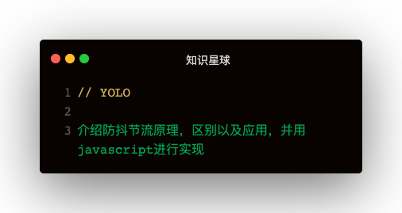

解答
防抖
原理
在事件被触发n秒后再执行回调，如果在这n秒内又被触发，则重新计时⌛️
场景
- 按钮重复点击：防止多次提交按钮，只执行最后一次提交
- 搜索框联想：防止联想发送请求，只发送最后一次输入
简易版实现
const debounce = fn => {
let _timeout;
return function (...args) {
const context = this
clearTimeout(_timeout)
_timeout = setTimeout(() => {
fn.apply(context, args)
}, 1000)
}
}
有些时候希望立即执行，然后等到n秒后才可以重新触发
升级版
const debounce = (fn, wait, immediate) => {
let timeout
return function (...args) {
const context = this
if (immediate) {
timeout = setTimeout(() => {
timeout = null
}, wait)
!timeout && fn.apply(context, args)
} else {
_timeout = setTimeout(() => {
fn.apply(context, args)
}, wait)
}
}
}
节流
原理
规定在一个单位时间内，只能触发一次函数，如果这个单位时间内触发多次函数，只有一次生效
使用场景
- 拖拽场景：固定时间内只执行一次，防止超高频次触发位置变动
- 缩放场景：监控浏览器size
使用时间戳实现
function throttle (func, wait) {
let previous = 0
return function (...args) {
const now = Date.now()
if (now - previous > wait) {
func.apply(this, args)
previous = now
}
}
}
使用定时器实现
function throttle (func, wait) {
let timeout
return function (...args) {
const context = this
if (!timeout) {
timeout = setTimeout(() => {
timeout = null
func.apply(context, args)
}, wait)
}
}
}